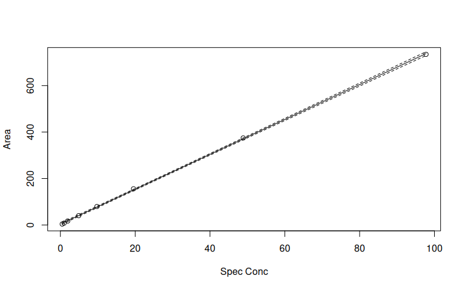
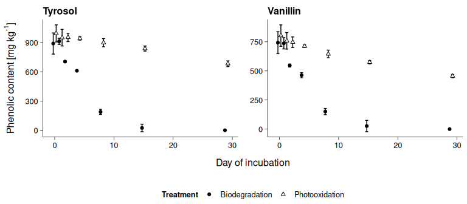

Calibration workflow
Zacharias Steinmetz
2023-09-19
Source:vignettes/calibration.Rmd
calibration.RmdSample data
The sample data used stems from Steinmetz et al. (2019). It consists of two tables: a sequence table and a sample table.
The sequence table contains gas-chromatography/mass spectrometry measurement data of two phenolic compounds, these are tyrosol and vanillin. Besides the samples, standard mixtures and extraction blanks (type) were acquired in three separate analysis batches. Each measurement resulted in an integrated peak area.
| Compound | Type | Batch | Name | Area | Spec Conc |
|---|---|---|---|---|---|
| Tyrosol | Extraction blank | 1 | Blank 1 | 0.000000 | NA |
| Tyrosol | Extraction blank | 1 | Blank 2 | 0.000000 | NA |
| Tyrosol | Sample | 1 | ZS-001 | 328.343597 | NA |
| Tyrosol | Sample | 1 | ZS-002 | 282.930939 | NA |
| Tyrosol | Standard | 3 | 0 mg/L | 0.000000 | 0.00000 |
| Tyrosol | Standard | 3 | 1 mg/L | 7.628456 | 0.97755 |
| Tyrosol | Standard | 3 | 5 mg/L | 35.566628 | 4.88775 |
| Tyrosol | Standard | 3 | 20 mg/L | 141.898056 | 19.55100 |
| Tyrosol | Standard | 3 | 100 mg/L | 715.496338 | 97.75500 |
| Vanillin | Sample | 1 | ZS-001 | 1876.933716 | NA |
| Vanillin | Sample | 1 | ZS-002 | 1578.626099 | NA |
The sample table describes the samples’ origin from a 29-day degradation experiment, in which the phenolic compounds were either degraded in the dark by the native soil microbial community or photooxidized under UV irradiation after sterilizing the soil. The samples were processed in threefold replication. Their weight [g], the volume [mL] of extract solution, and the dilution factor were recorded.
| Name | Day | Lighting | Sterilization | Treatment | Replicate | Weight | Extract | Dilution |
|---|---|---|---|---|---|---|---|---|
| ZS-001 | 0 | UV | sterilized | Photooxidation | 1 | 2.5037 | 12.5 | 5 |
| ZS-002 | 0 | UV | sterilized | Photooxidation | 2 | 2.5018 | 12.5 | 5 |
| ZS-019 | 0 | dark | non-sterilized | Biodegradation | 1 | 2.5001 | 12.5 | 5 |
| ZS-164 | 29 | dark | non-sterilized | Biodegradation | 2 | 2.4992 | 12.5 | 1 |
| ZS-165 | 29 | dark | non-sterilized | Biodegradation | 3 | 2.5000 | 12.5 | 1 |
In envalysis, the sample data is stored in a
two-item list called phenolics. The list items are named
seq and samples.
# > List of 2
# > $ seq :'data.frame': 160 obs. of 6 variables:
# > ..$ Compound : Factor w/ 2 levels "Tyrosol","Vanillin": 1 1 1 1 1 1 1 1 1 1 ...
# > ..$ Type : Factor w/ 3 levels "Extraction blank",..: 1 1 2 2 2 2 2 2 2 2 ...
# > ..$ Batch : int [1:160] 1 1 1 1 1 1 1 1 1 1 ...
# > ..$ Name : chr [1:160] "Blank 1" "Blank 2" "ZS-001" "ZS-002" ...
# > ..$ Area : num [1:160] 0 0 328 283 296 ...
# > ..$ Spec Conc: num [1:160] NA NA NA NA NA NA NA NA NA NA ...
# > $ samples:'data.frame': 42 obs. of 9 variables:
# > ..$ Name : chr [1:42] "ZS-001" "ZS-002" "ZS-003" "ZS-019" ...
# > ..$ Day : int [1:42] 0 0 0 0 0 0 1 1 1 1 ...
# > ..$ Lighting : Factor w/ 2 levels "dark","UV": 2 2 2 1 1 1 2 2 2 1 ...
# > ..$ Sterilization: Factor w/ 2 levels "non-sterilized",..: 2 2 2 1 1 1 2 2 2 1 ...
# > ..$ Treatment : Factor w/ 2 levels "Biodegradation",..: 2 2 2 1 1 1 2 2 2 1 ...
# > ..$ Replicate : int [1:42] 1 2 3 1 2 3 1 2 3 1 ...
# > ..$ Weight : num [1:42] 2.5 2.5 2.5 2.5 2.5 ...
# > ..$ Extract : num [1:42] 12.5 12.5 12.5 12.5 12.5 12.5 12.5 12.5 12.5 12.5 ...
# > ..$ Dilution : int [1:42] 5 5 5 5 5 5 2 2 2 2 ...Simple calibation
Since the two phenolic compounds were analyzed in three different
batches, six individual calibration curves are required for
quantification. For better understanding, the calibration workflow is
first shown for a subset of data, namely the first batch of tyrosol
measurements. The subset is stored in tyrosol_1.
All standards in the tyrosol_1 subset are used for
calibration. The 'calibration' object is stored as
cal_1, which can be printed for additional information
including limits of detection and quantification, the adjusted
R2, blanks, and statistical checks of the underlying
calibration model.
tyrosol_1 <- subset(phenolics$seq, Compound == "Tyrosol" & Batch == 1)
cal_1 <- calibration(Area ~ `Spec Conc`,
data = subset(tyrosol_1, Type == "Standard"))
print(cal_1)# >
# > Call:
# > calibration(formula = Area ~ `Spec Conc`, data = subset(tyrosol_1,
# > Type == "Standard"))
# >
# > Coefficients:
# > (Intercept) `Spec Conc`
# > 3.762 7.508
# >
# > Adjusted R-squared: 0.9998
# > Sum relative error: 1.558
# >
# > Blanks:
# > [1] 0.07470126 0.06534690 0.06093782 0.00000000
# >
# > `Spec Conc` lwr upr
# > LOD 0.0144 0.00952 0.0293
# > LOQ 5.9300 3.92000 12.1000
# >
# > Check for normality of residuals:
# >
# > Shapiro-Wilk normality test
# >
# > data: residuals(calibration(formula = Area ~ `Spec Conc`, data = subset(tyrosol_1, )residuals( Type == "Standard")))
# > W = 0.87897, p-value = 0.1841
# >
# > Check for homoscedasticity of residuals:
# >
# > studentized Breusch-Pagan test
# >
# > data: Area ~ `Spec Conc`
# > BP = 0.40323, df = 1, p-value = 0.5254
plot(cal_1)
Based on cal_1, the tyrosol concentrations can be
calculated for all samples using inv_predict(). The
argument below_lod = 0 specifies that concentrations below
limit of detection (LOD) should be set to zero.
tyrosol_1$`Calc Conc` <- inv_predict(cal_1, tyrosol_1$Area, below_lod = 0)
head(tyrosol_1)# > Compound Type Batch Name Area Spec Conc Calc Conc
# > 1 Tyrosol Extraction blank 1 Blank 1 0.0000 NA 0.00000
# > 2 Tyrosol Extraction blank 1 Blank 2 0.0000 NA 0.00000
# > 3 Tyrosol Sample 1 ZS-001 328.3436 NA 43.23037
# > 4 Tyrosol Sample 1 ZS-002 282.9309 NA 37.18195
# > 5 Tyrosol Sample 1 ZS-003 296.2863 NA 38.96072
# > 6 Tyrosol Sample 1 ZS-019 243.0258 NA 31.86707Working with data.tables
To process all compounds and analysis batches together, the
phenolics data is converted to
data.tables.
dt <- lapply(phenolics, as.data.table)To replicate the following steps, try to organize your data in the
same way as shown before. If you want to read in your data directly as
data.table, use their fread() function, for
instance.
Batch calibration
Subsequently, calibration() and
inv_predict() are applied by compound and batch.
dt$seq[, `Calc Conc` := calibration(Area ~ `Spec Conc`, .SD[Type == "Standard"]) |>
inv_predict(Area, below_lod = 0),
by = .(Compound, Batch)]
head(dt$seq)# > Compound Type Batch Name Area Spec Conc Calc Conc
# > 1: Tyrosol Extraction blank 1 Blank 1 0.0000 NA 0.00000
# > 2: Tyrosol Extraction blank 1 Blank 2 0.0000 NA 0.00000
# > 3: Tyrosol Sample 1 ZS-001 328.3436 NA 43.23037
# > 4: Tyrosol Sample 1 ZS-002 282.9309 NA 37.18195
# > 5: Tyrosol Sample 1 ZS-003 296.2863 NA 38.96072
# > 6: Tyrosol Sample 1 ZS-019 243.0258 NA 31.86707Calibration parameters like LODs, LOQs, or adjusted R2 may be stored in a separate list item for later use.
dt$cal <- dt$seq[Type == "Standard", calibration(Area ~ `Spec Conc`) |>
as.list(c("coef", "adj.r.squared", "lod", "loq")),
by = .(Compound, Batch)]
print(dt$cal)# > Compound Batch (Intercept) `Spec Conc` adj.r.squared lod loq
# > 1: Tyrosol 1 3.76202803 7.508184 0.9997915 0.0143933 5.925273
# > 2: Tyrosol 2 3.07268449 7.601129 0.9992824 0.0092660 10.909912
# > 3: Tyrosol 3 0.05587782 7.309053 0.9999764 0.0000000 2.311322
# > 4: Vanillin 1 25.17794786 51.529670 0.9998175 0.0040133 5.623778
# > 5: Vanillin 2 24.44314369 51.774820 0.9992359 0.0003509 11.408191
# > 6: Vanillin 3 10.62899985 50.819997 0.9999641 0.0000000 2.886073Blank subtraction
With the calculated concentrations at hand, the sample concentrations are subtracted by the extraction blanks to correct for potential lab-borne contamination.
dt$seq[, `Clean Conc` := `Calc Conc` - mean(
`Calc Conc`[Type == "Extraction blank"], na.rm = T),
by = .(Batch, Compound)]Merging tables
The sequence table is merged with the sample table and the contents of phenolic compounds are calculated from the extraction volume, sample weight, and dilution factor.
dt$res <- merge(dt$seq, dt$samples, by = "Name")
dt$res[, Content := `Clean Conc` * (Extract / Weight) * Dilution]
head(dt$res)# > Name Compound Type Batch Area Spec Conc Calc Conc Clean Conc Day
# > 1: ZS-001 Tyrosol Sample 1 328.3436 NA 43.23037 43.23037 0
# > 2: ZS-001 Vanillin Sample 1 1876.9337 NA 35.93572 35.93572 0
# > 3: ZS-002 Tyrosol Sample 1 282.9309 NA 37.18195 37.18195 0
# > 4: ZS-002 Vanillin Sample 1 1578.6261 NA 30.14667 30.14667 0
# > 5: ZS-003 Tyrosol Sample 1 296.2863 NA 38.96072 38.96072 0
# > 6: ZS-003 Vanillin Sample 1 1593.6272 NA 30.43779 30.43779 0
# > Lighting Sterilization Treatment Replicate Weight Extract Dilution
# > 1: UV sterilized Photooxidation 1 2.5037 12.5 5
# > 2: UV sterilized Photooxidation 1 2.5037 12.5 5
# > 3: UV sterilized Photooxidation 2 2.5018 12.5 5
# > 4: UV sterilized Photooxidation 2 2.5018 12.5 5
# > 5: UV sterilized Photooxidation 3 2.5048 12.5 5
# > 6: UV sterilized Photooxidation 3 2.5048 12.5 5
# > Content
# > 1: 1079.1621
# > 2: 897.0653
# > 3: 928.8800
# > 4: 753.1246
# > 5: 972.1515
# > 6: 759.4865Plotting
For plotting the data using ggplot2, the contents are summarized by mean and confidence interval (CI).
dt$sum <- dt$res[, .(Content = mean(Content, na.rm = T),
CI = CI(Content, na.rm = T)),
by = .(Compound, Treatment, Day)]
ggplot(dt$sum, aes(x = Day, y = Content)) +
geom_errorbar(aes(ymin = Content - CI, ymax = Content + CI, group = Treatment),
width = 1, position = position_dodge(1)) +
geom_point(aes(shape = Treatment, fill = Treatment),
position = position_dodge(1)) +
xlab("Day of incubation") +
ylab(expression("Phenolic content"~"["*mg~kg^-1*"]")) +
facet_wrap(~ Compound, ncol = 2, scales = "free") +
scale_shape_manual(values = c(21,24)) +
scale_fill_manual(values = c("black", "white")) +
theme_publish()
References
Steinmetz, Z., Kurtz, M.P., Zubrod, J.P., Meyer, A.H., Elsner, M., & Schaumann, G.E. (2019) Biodegradation and photooxidation of phenolic compounds in soil—A compound-specific stable isotope approach. Chemosphere 230, 210-218. DOI: 10.1016/j.chemosphere.2019.05.030.